An open-source, easy to set up
observability solution for
GraphQL APIs, enabling seamless
analysis of slow requests, errors, resolver performance, and
identification of backend bottlenecks.
Metrics
Metrics
Monitor your GraphQL API request rate, latency, and error rate.
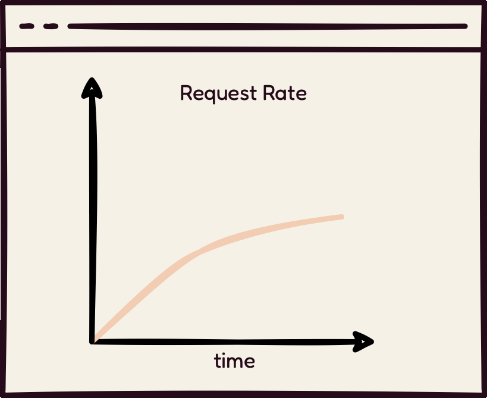
Traces
Traces
Analyze traces for every request made to the
/graphql endpoint.
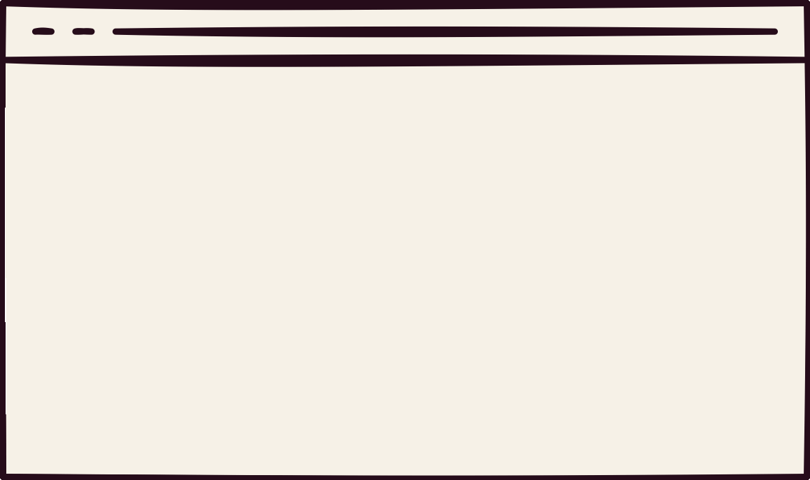
Case Study
1. Introduction
GraphQL is a query language for APIs and a server-side runtime that
gives clients the flexibility to send customized queries to the API.
While GraphQL provides the benefits of speed and flexibility, using
it can make it more complex for backend engineers to monitor the
health of an API. Say an engineering team receives complaints about
their GraphQL API being slow, how do they troubleshoot? Is it
because a request was very complex? Is there a backend bottleneck?
Is there an inefficient database operation, and how do they find it?
If one request executes multiple database queries, how do they find
which one is causing increased latency? Given all these questions,
the team needs detailed information to find the root cause of the
problem.
1.1 QMantis
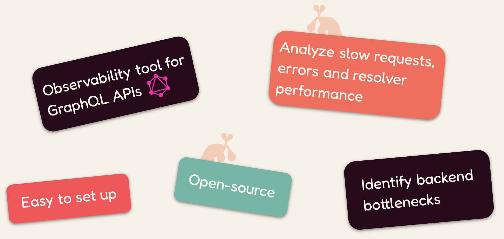
QMantis, an open-source observability solution for GraphQL APIs,
intends to address these questions by abstracting away the
complexity of generating, processing, exporting, storing, and
visualizing metrics and traces data, making it easy to track errors
and analyze an API's performance at the resolver level.
QMantis helps teams spot potential problems and quickly identify
what is causing these issues. QMantis uses telemetry data,
specifically metrics and GraphQL-specific traces, to help teams
monitor a GraphQL API's health. With QMantis, engineering teams can
see exactly which requests are performing poorly, even in complex
operations.
Before diving into the details of how the creation of QMantis, let
us introduce Novels and Barns, a hypothetical company that can
benefit from adding a GraphQL-specific observability service to
their API.
1.2 Novels and Barns
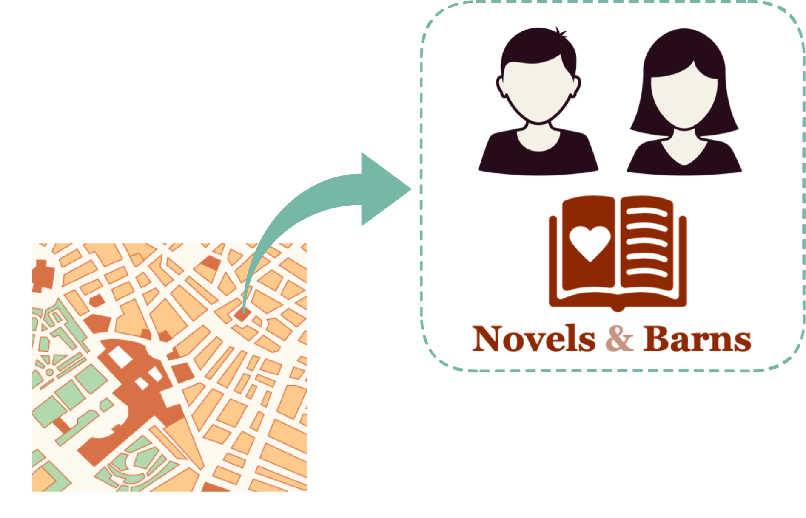
Novels and Barns is a small, independent bookstore with a few
brick-and-mortar locations, as well as an online store. They have a
small engineering team of only two people that are responsible for
maintaining Novels and Barns' monolithic, single-server application.
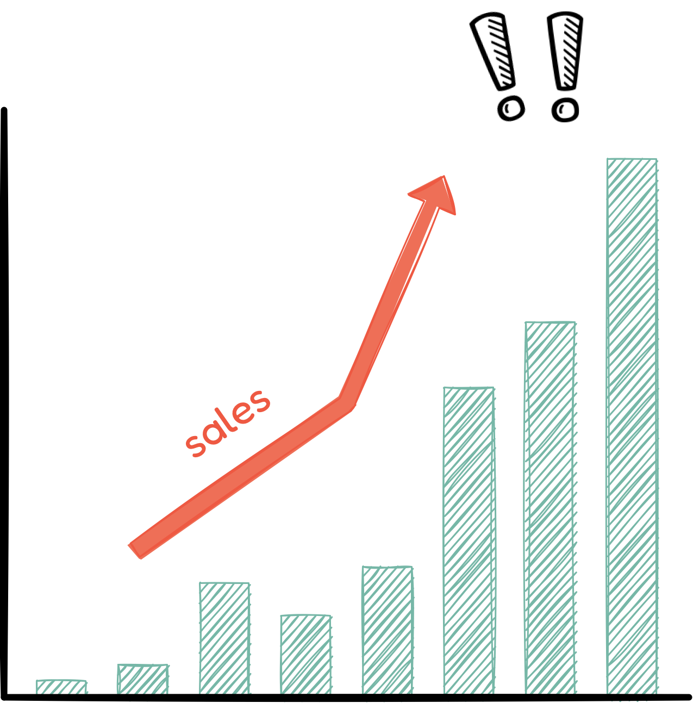
Over the past year, Novels and Barns' sales have increased
significantly. Notably, mobile sales are skyrocketing, now
accounting for over a third of the company's revenue, and are
projected to have continued growth.
Recently, with this surge in sales, customers' complaints have also
increased. There have been many complaints about the slow speed of
the mobile web application. Maintaining customer satisfaction is
critical, especially for a small retailer like Novels and Barns, as
when an application is slow, there is the added risk of customers
buying fewer books, or simply giving up and not purchasing anything
at all. Knowing the negative impact that high latency has on sales
[1], the team is working hard to improve the performance of their
mobile web application.
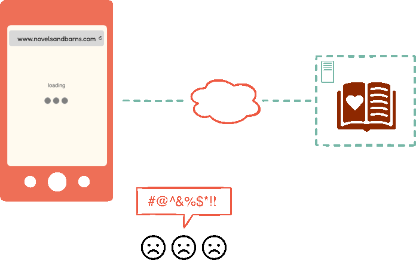
2. REST vs GraphQL
REST is a common architectural style for building APIs, in which
clients perform a pre-defined set of actions on database objects,
and the server returns a structured representation of those objects.
For each HTTP request, clients choose one endpoint and an
appropriate HTTP method for the purpose of obtaining data or sending
data, among other operations, and each response returns a fixed
resource representation.
As mentioned previously, GraphQL is a query language for APIs and a
server-side runtime. GraphQL APIs must define a schema that
specifies both the operations that can be executed, as well as the
type of data that can be requested. When a request is received by a
GraphQL server, it parses the request, validates it against the
schema, and then executes it by calling functions, known as
resolvers, containing the business logic for communicating with the
data source and carrying out the request. GraphQL APIs give clients
the flexibility to customize their requests, but on the other hand,
requests vary in their complexity and structure, and server
responses are not always consistent.
2.1 Mobile Experience
There are two key differences between REST and GraphQL APIs that
could significantly impact a user's mobile experience.
2.1.1 Only One Endpoint
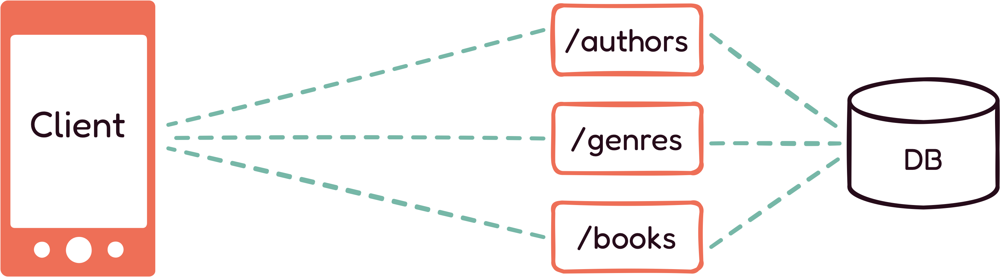
With a REST API, to load a page, a client may need to make multiple
requests to get the information they need. For instance, if a Novels
and Barns client wants to get a list of all the romance novels
written by a specific author, they need to make three different GET
requests: one to the /authors endpoint, another to the
/genres endpoint, and one to the
/books endpoint. Even in this simple example, there are
already three network calls made between the client and the server.
As mobile devices are designed for mobility, they do not always have
access to a good network connection, so these multiple network calls
can take time to complete, impacting the amount of time it takes for
a page to load.
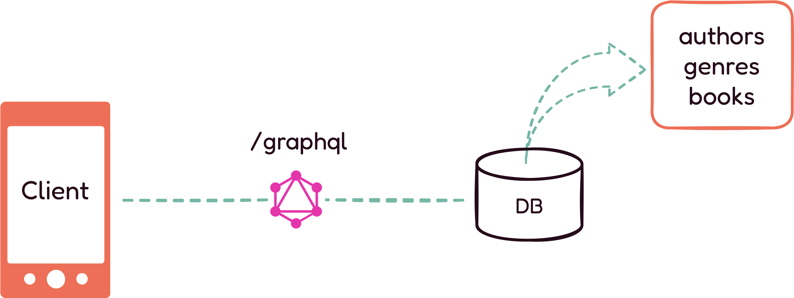
With a GraphQL API, clients can customize requests in order to fetch
exactly the data they need, reducing the overall number of requests
made. Using this architecture, the heavy lifting is done by the
backend server. When a request comes in, the GraphQL server parses
it, validates it, and then executes the necessary resolver
functions. Then, the server aggregates the requested data, which is
sent back to the client in one response. This process can improve an
application's performance and reduce latency, especially on mobile
devices, since there are fewer network calls made between the client
and the server.
2.1.2 Customizable Queries
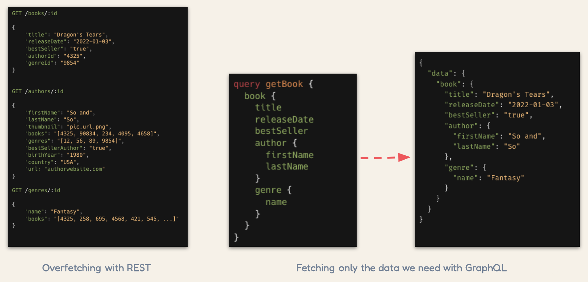
REST APIs often result in an issue known as data over-fetching. In
the example above, the client wants to load a book page, and to do
that, the client needs the author's first and last name. However,
because a REST API always returns the same resource representation,
when a client makes a GET request to the
/authors endpoint, the client receives a lot of
unnecessary information. Mobile devices may have limited bandwidth
and computing power, making it harder to handle a large amount of
data. In this scenario, using GraphQL minimizes bandwidth usage, as
requests only fetch exactly the data that is needed, eliminating the
issue of over-fetching.
2.2 Novels and Barns
Up until recently, the Novels and Barns mobile application used a
REST API. Say a customer wanted to view a specific category of books
on their device - to do so, the client application had to make many
requests, and each response came with extra unneeded information; in
order to display only the requested information, the client had to
perform the additional work of filtering for relevant information.
This process worked well for many years and still works well for the
desktop browser application. However, the recent exponential
increase in their mobile traffic and sales put an unnecessary strain
on the client-side of their architecture, and negatively impacted
the shopping experience for customers. In order to improve the
performance of their mobile application, the Novels and Barns
engineering team decided to implement a GraphQL API.
3. Observability
3.1 What is Observability?
Observability means measuring and analyzing a system's current state
based on the data it generates. The more observable a system is, the
more quickly a developer can go from spotting a potential problem to
identifying its root cause, without needing to write any code. The
goal of observability is to help developers understand what is
happening so that they can troubleshoot and debug applications
effectively. Observability relies on telemetry data to analyze
systems and applications.
3.2 Telemetry
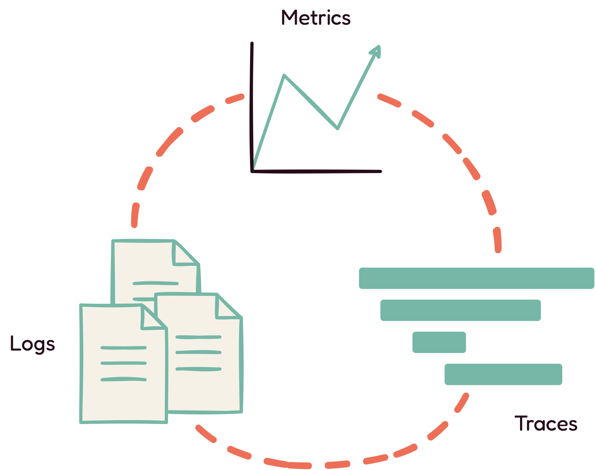
Telemetry is the automated process of remotely collecting and
transmitting measurements and other types of data
[2]. This process is used in many industries, such as healthcare,
transportation, and meteorology
[3]. In the context of software engineering, telemetry data allows
teams to measure and track the performance and the health of an
application or system.
The three main telemetry data types used in software engineering are
metrics, traces, and logs. For the purpose of this case study, only
metrics and traces are discussed in detail, as these are the data
types generated by QMantis.
3.2.1 Metrics
Metrics are numerical values calculated over a period of time; they
provide big-picture information about an application or system.
The Novels and Barns sales department, for example, collects
metrics, such as sales volume per day, number of customers in a
brick and mortar store per hour, average total sales per customer
per hour, to name a few. These metrics provide information that is
essential to guide their business decisions.
Similarly, collecting metrics helps engineering teams maintain and
improve an API. Metrics help answer questions such as: is the
application performance degrading? Is latency higher than usual? Are
users encountering errors? When are the downtimes? Metrics help
engineering teams spot potential problems and stay proactive. For
example, developers can use metric data to identify usage trends -
this information can be utilized in various ways, such as scheduling
maintenance during known downtimes, when there is less traffic.
QMantis tracks what is known as RED metrics: request rate, error
rate, and duration (latency) [4].
3.2.2 Traces
The other data type QMantis generates are called traces, which
provide detailed information about a request's journey. Traces help
developers identify where failures occur, as well as the root causes
of poor performance. Traces are made up of spans, and each span
represents a piece of the request workflow. The top-level root span
encapsulates the end-to-end latency of an entire request, while all
the subsequent spans, known as child spans, represent operations
that take place as part of the request.
When a customer visits a Novels and Barns location, from the moment
they walk through the door, until they leave the store, that can be
considered a trace. Using this scenario, a span could be, for
instance, their walk from the door to the non-fiction section.
Another span is when the customer picks up a book and skims it. When
the customer pays for their book, this is yet another span. Each
trace provides all of this detailed information about a request's
(or customer's) journey. Traces contain the answer to questions
like: What sections did the customer visit? What books did they look
at? If there was a purchase, how much was it?
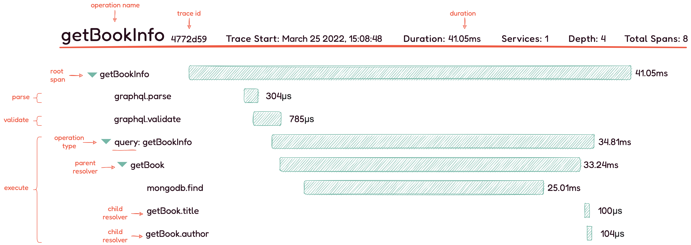
Above is an example of a GraphQL-specific trace that labels the
operation (or trace) name, the trace ID, the total duration of the
request, the root span, and other key pieces of information.
Every GraphQL request goes through parsing, validation, and
execution phases (labelled on the left side of the diagram); each of
these phases and their respective spans are visualized above. The
execution phase contains the operation type, the parent and child
resolver names, and their associated spans.
Analyzing these GraphQL-specific spans help developers gain a deeper
understanding of the journey of a GraphQL request, and identify
where any bottlenecks or errors occur. Traces are often discussed in
the context of microservices. However, with GraphQL, traces are
useful to observe, even when using a monolithic architecture.
3.3 Observability for GraphQL APIs
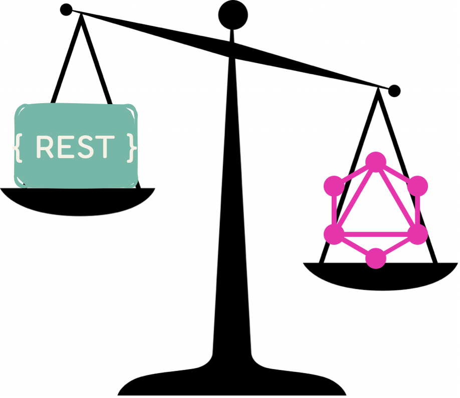
Why must observability for GraphQL APIs be approached differently
compared to REST APIs?
With REST APIs, collecting metrics provides good insight into the
health of an application. For instance, error rates can be filtered
by endpoint, HTTP status code, and/or HTTP method. If there is an
increase in the error rate, having these three pieces of information
makes it easier to narrow down where the problem is.
With GraphQL, on the other hand, an increase in latency may be
caused by an increase in operation complexity. As a client can
perform different requests that differ in structure and complexity,
the server response is influenced by the complexity of the request.
Therefore, when it comes to GraphQL APIs, metrics alone do not
provide enough information or context to find the root cause of a
problem, even within a monolithic architecture. This can be
explained by three features unique to GraphQL, which are not found
in REST: firstly, GraphQL only has one endpoint
(/graphql), secondly, most GraphQL requests default to
POST requests, and finally, most GraphQL responses return a status
code of 200, even when errors occur. Let us discuss each of these
points in more detail.
3.3.1 Only One Endpoint
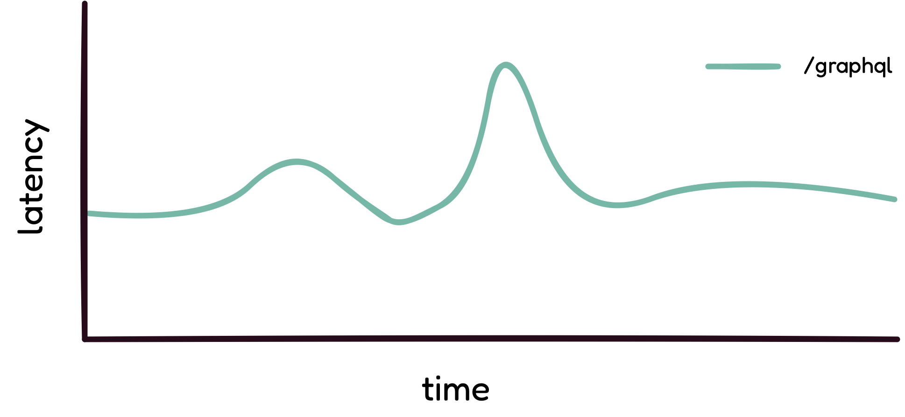
GraphQL: Latency data for the /graphql endpoint.
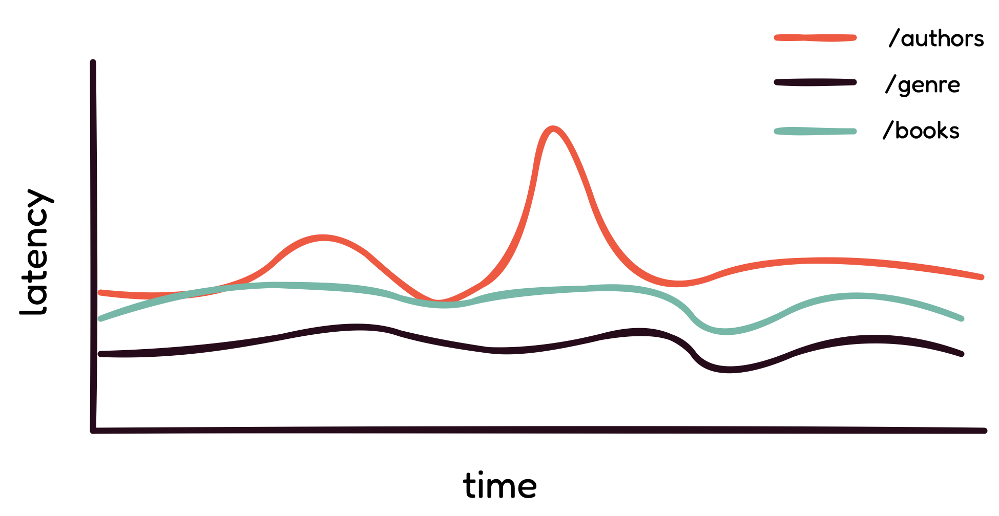
REST: Latency data for the /authors, /genre, and /books
endpoints.
As GraphQL only has one endpoint, which is /graphql,
developers need more information to investigate application issues.
For example, to find the root causes of high latency, developers
need to answer questions such as: Is the latency because of the
complexity of the request? Is there a performance bottleneck? If
yes, where is this happening? There is a potential problem, but that
is all the information known at this point.
Visualizing the latency rate points the developer in the right
direction. It shows that there is something worth investigating, but
the second graph alone does not provide enough information to figure
out where the problem is happening. With only the information from
the graph above, the developer can not distinguish if the higher
latency is caused by a complex operation, a backend bottleneck, or
an inefficient resolver.
In contrast, as seen in the second diagram, with REST APIs, it is
easier to quickly narrow down where the issue is coming from: the
/authors endpoint. Also, because REST always returns
the same resource representation, an increase in latency is often
related to a backend bottleneck. To get more information about the
source of high latency, developers can just filter by the HTTP
response status code and HTTP request method.
3.3.2 Most GraphQL Requests are POST Requests
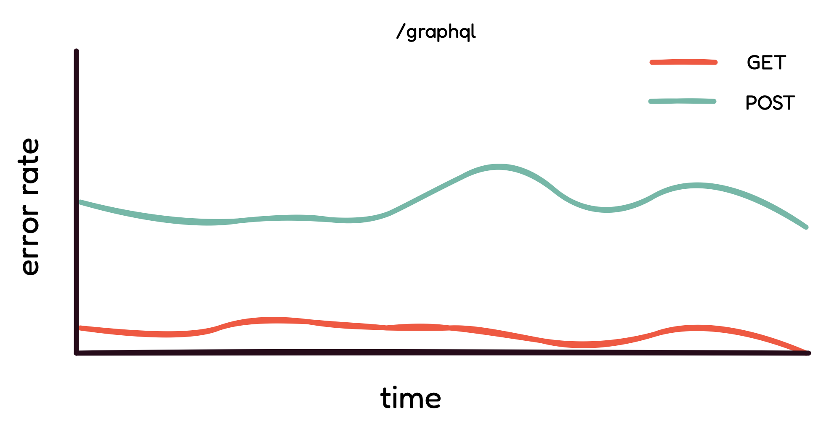
Most GraphQL requests are POST requests.
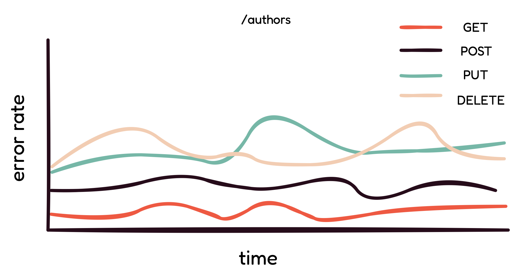
REST requests can be filtered by HTTP method.
As the vast majority of GraphQL requests are POST requests,
filtering the error rate by HTTP method does not give any insight
into a potential issue. On top of that, GraphQL does not accept PUT
or DELETE requests. Instead, GraphQL requests are categorized as
either queries, mutations, or subscriptions; for further
differentiation, users have the option to name each request.
With REST, filtering by HTTP method is actually helpful, as each
request is a GET, POST, PUT, or DELETE HTTP method. In the example
above, it is evident that potential latency issues are coming from
PUT and DELETE requests.
3.3.3 Most GraphQL responses have a status code 200
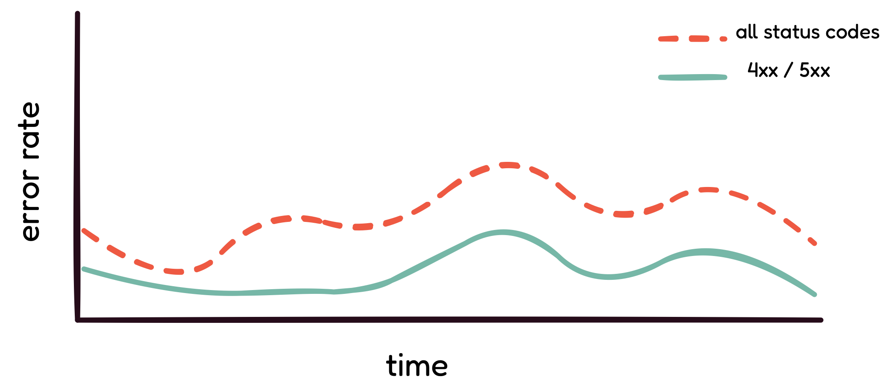
Finally, with REST, errors can be tracked by the response status
code. For example, if the request has a 4xx or 5xx status code, it
can safely be counted as an error.
With GraphQL, it is common for responses with errors to return a
status code of 200. Therefore, relying on the response status code
to count errors will underestimate the "real" error rate of GraphQL
APIs. The diagram above tracks the error rate of a GraphQL API - the
dashed line represents the API's actual error rate, while the solid
line below tracks the API's error rate using 4xx and 5xx request
status codes. It is evident that tracking status codes is not a
reliable way to track the error rate of a GraphQL API.
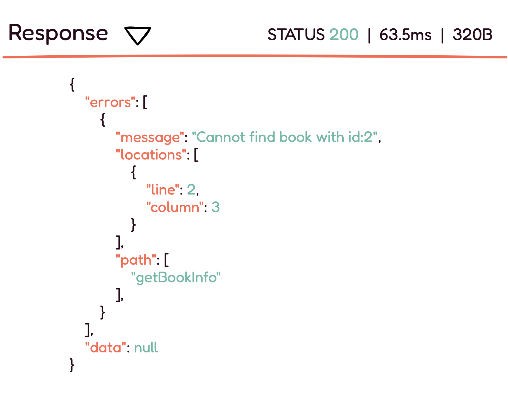
Rather than using status codes, GraphQL handles errors differently.
With GraphQL, all errors, regardless of status code, are handled as
part of the response body under a special errors object, as seen
above. To have a clear picture of the GraphQL API's health, it is
important to track this object, instead of the response status code
alone.
3.4 Observability for the Novels and Barns GraphQL API
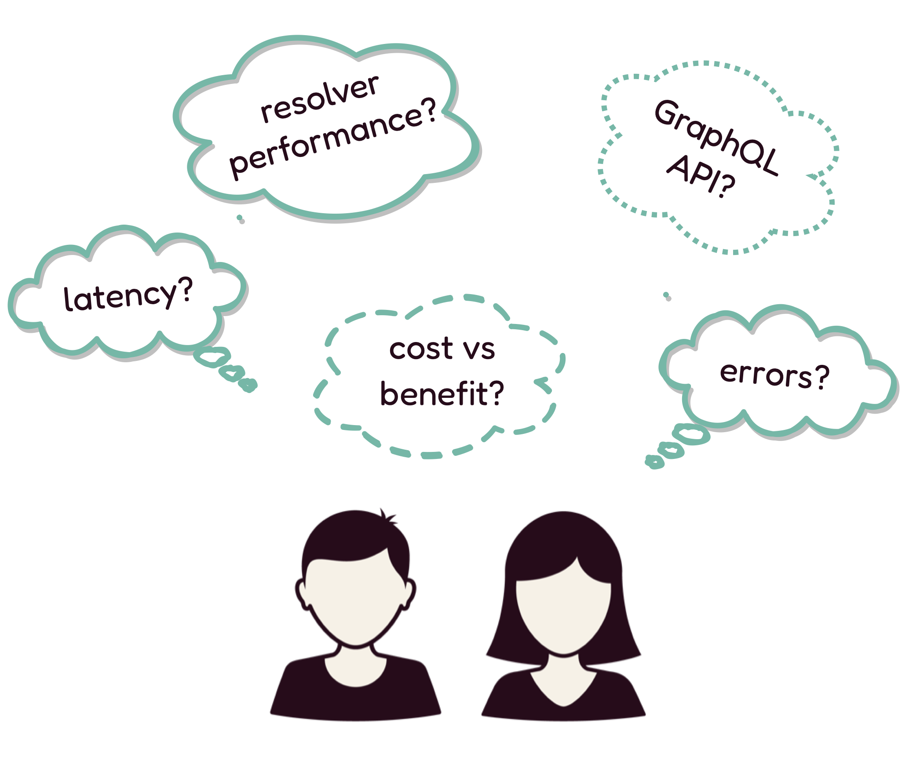
Why is all of this information relevant for Novels and Barns, and
small businesses like it? Novels and Barns has already invested a
lot of time and money to develop a GraphQL API, and they want to
ensure that it is performant. The company's engineers are not
GraphQL experts, and they want to effectively monitor the health of
their newly implemented GraphQL API. Mainly, they want to: track and
reduce latency, monitor the overall performance of requests and
their resolvers, know how requests are hitting the database, track
errors, and respond to issues quickly and proactively. Therefore, to
achieve these goals, having an observability service for their
GraphQL API is critical for the Novels and Barns team.
4. Existing Solutions
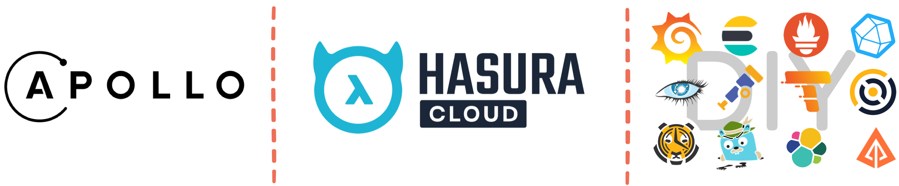
Novels and Barns understands that using a GraphQL-specific
observability tool is important for their new GraphQL API, and are
now considering and comparing some existing GraphQL observability
solutions. They have narrowed down their choice of solutions to two
broad categories: they could use fully managed services like Apollo
Studio or Hasura Cloud, or, they could take a DIY approach that
pieces together open source tools.
4.1 Fully Managed Cloud Services
Apollo Studio and Hasura Cloud are two established, fully managed
observability and monitoring cloud services for GraphQL. These
platforms provide meaningful GraphQL-specific information, such as
each operation name and type, as well as an abundance of features,
however, only some of their services are free.
4.1.1 Apollo Studio
Apollo Studio is a cloud platform that offers monitoring of metrics
and traces. It has many different features, as well as a relatively
easy-to-use UI.
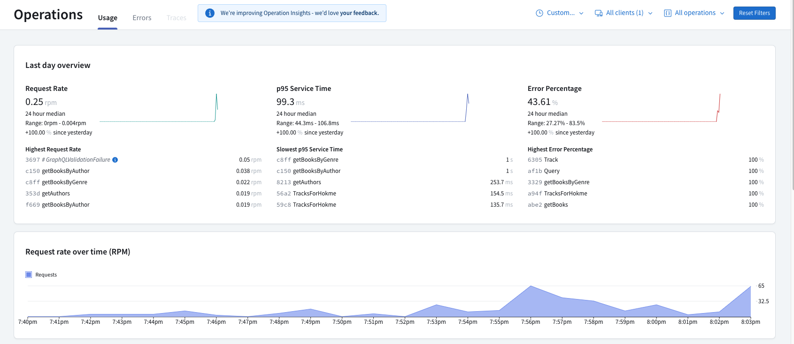
Above is a view of Apollo Studio's monitoring dashboard. It displays
metrics information such as request rate, latency, and error rate.
It is also possible to see which is the most frequently used
operations, the slowest operations, and operations resulting in the
most errors. On the bottom is a graph that shows the request rate
over time, making it easy to identify spikes in traffic.
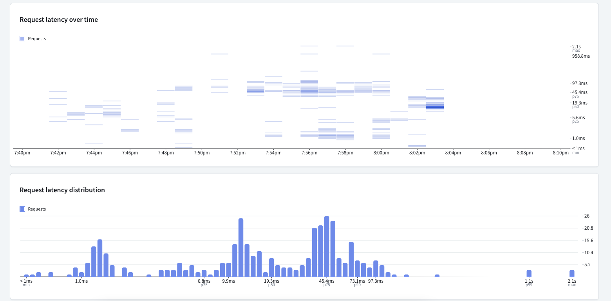
This is another view of the Apollo Studio's dashboard. The top of
the screenshot shows the request latency over time, which helps show
when slow requests happened. On the bottom is a visualization of the
request latency distribution, which makes it easy to spot outliers
and slow requests.
4.1.2 Hasura Cloud
Hasura Cloud is another fully-managed cloud service that handles the
infrastructure of GraphQL applications, and offers real-time metrics
and tracing. Like Apollo Studio, Hasura Cloud offers many features
and has an easy-to-use user interface.
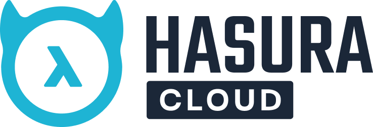
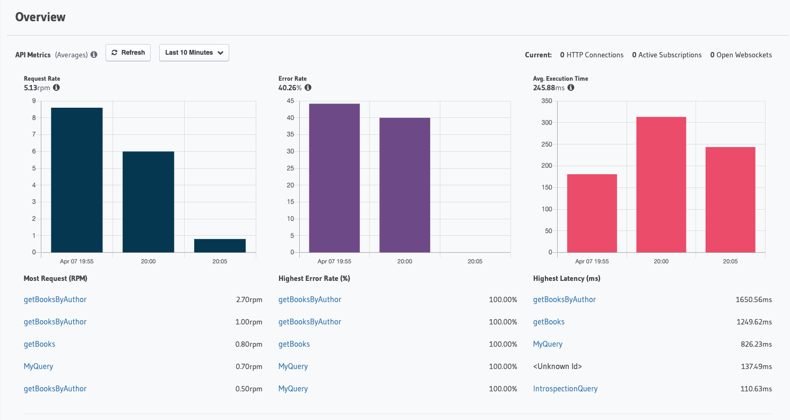
Above is a view of Hasura Cloud's dashboard. It is somewhat similar
to the Apollo Studio dashboard, in that it shows the same three main
metrics: request rate, error rate, and latency. It also displays
graphs for the most frequently used operations, the slowest
operations, and operations resulting in the most errors.
Novels and Barns could choose to use Apollo Studio or Hasura Cloud
as their observability tool. However, Apollo Studio requires users
to pay to access traces. The free version of Hasura Cloud limits
users to 60 requests per minute. Novels and Barns is getting more
traffic with new customers, so they would rather not have this
limit. Also, Apollo Studio or Hasura Cloud both own any collected
data, meaning the team would not be able to download or visualize
data collected past a certain retention period.
While Apollo Studio and Hasura Cloud are great options for large
enterprise companies with many engineers and big budgets, a small
company like Novels and Barns prefers to minimize costs as much as
possible. Also, although Apollo Studio and Hasura Cloud offer
fully-serviced, easy to setup observability solutions for GraphQL
APIs, data ownership is a must-have for the Novels and Barns team.
So, in this case, the Novels and Barns team decides that neither
Apollo Studio nor Hasura Cloud would be the best fit for them.
4.2 DIY
Aside from fully-managed services, Novels and Barns could go for a
DIY route. They would be able to do this without spending a lot of
money while maintaining ownership of their telemetry data, which are
the two most important features they are looking for in an
observability tool. This approach would also allow them to have full
control over the features and how the tool works.
However, a DIY approach has a steep learning curve which involves
researching many different components and stitching them together.
This approach is research-intensive, resource-demanding, and
time-consuming. If Novels and Barns had a big engineering team, they
would probably choose the DIY approach. However, with a team of only
two engineers, they would rather spend their time and effort
focusing on the business logic of their application. Therefore,
after careful consideration, the team decides that the DIY approach
is not the best option for them.
5. Our Solution: QMantis
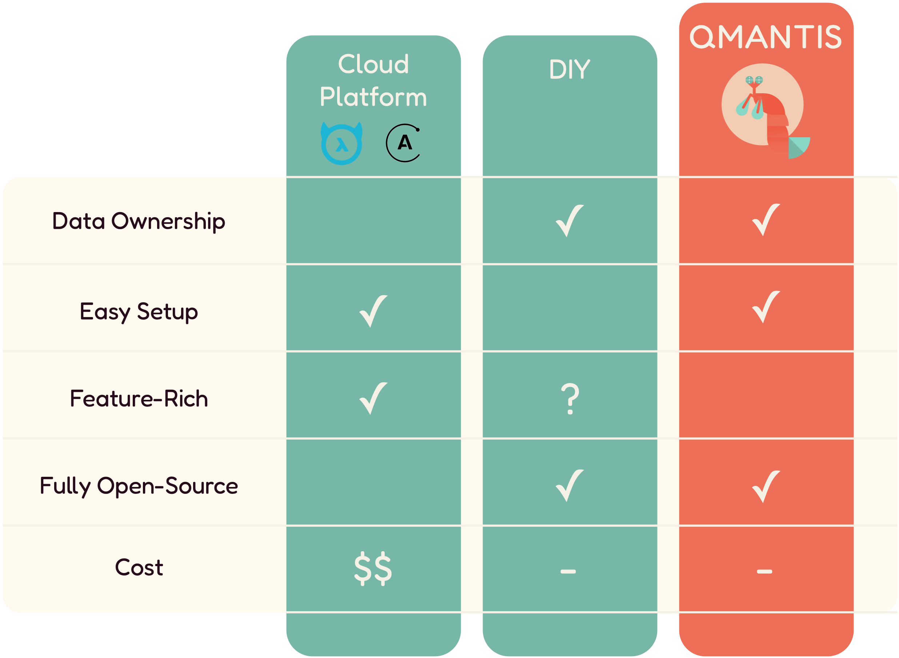
There is a third solution that Novels and Barns could use: QMantis.
As discussed earlier, QMantis is an open-source observability tool
for GraphQL APIs, designed for small applications. With QMantis,
Novels and Barns gets to maintain control over their data without
needing to export it to a third-party.
QMantis is well-documented and designed for easy setup, reducing
time cost. Users are able to see both metrics and traces, all in one
dashboard, even though QMantis has fewer features than the
fully-managed cloud solutions.
Finally, QMantis is free and open-source. There are no time or
storage limitations, so Novels and Barns can invest their funds into
other business needs.
5.1 How Novels and Barns Can Use QMantis
After discussing the pros and cons of the various existing GraphQL
observability solutions, Novels and Barns has found QMantis to be
the best fit for their business.
Now, with QMantis, Novels and Barns' small development team can get
free metric and tracing coverage made specifically for GraphQL APIs,
without having to learn or implement any other observability
technologies. They can check their mobile application's usage by
monitoring its request rate, error rate, and overall latency. They
can also analyze and distinguish every request made to the GraphQL
endpoint.
Further, Novels and Barns can determine their application's usage
trends by analyzing each operation and resolvers' runtime. With the
growing success of their business and their recent surge in users,
they can more quickly investigate and address bottlenecks in their
mobile application, preventing high latency and ensuring customer
satisfaction.
Here is an overview of what QMantis offers.
5.2 An Overview of QMantis
5.2.1 Main Dashboard
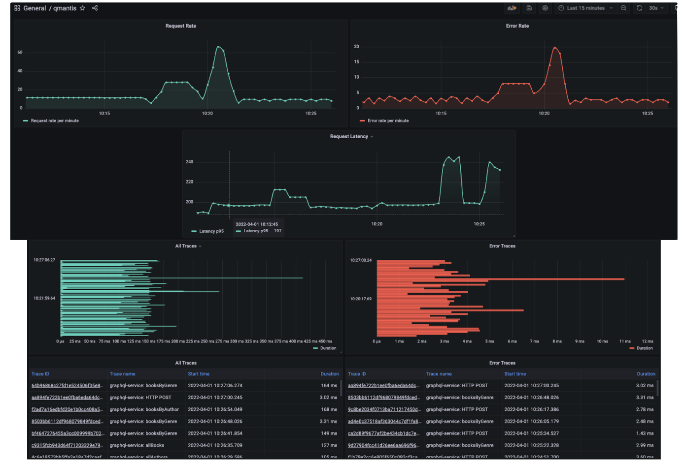
The screenshot above shows what a QMantis dashboard may look like
for a user like Novels and Barns. The dashboard shows metrics and
traces side by side. Being able to view metrics and traces in the
same place provides insight into what is going on with the GraphQL
API. For example, on the top row are some metrics panels; here, the
request rate and error rate move together, as expected. However, in
the panels below the first row, it is evident that the average
latency of requests is spiking outside of any increase in traffic.
When metrics are seen alongside traces, it is clear that some
outliers are driving up the average latency time, and should be
investigated.
5.2.2 Analyzing Traces
With QMantis, the user can easily analyze traces for every request
made to the /graphql endpoint.
Below, we can see what a typical trace should look like for a simple
query when viewed using Grafana (QMantis' visual layer).
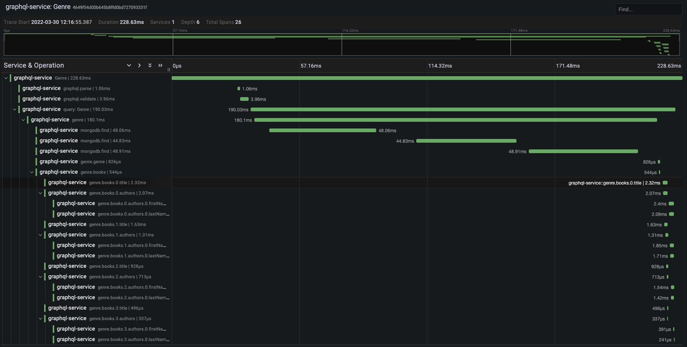
In this query, books from a particular author are fetched, along
with the genres of those books. Far on the right hand of the image,
in the condensed span section, there are multiple spans executing at
the same time. This is exactly what an efficient query looks like
when visualized.
Once the author is fetched, all the books related to that author,
and the genres related to that book, are fetched asynchronously. On
the left-hand side, it is possible to see exactly what is fetched
while each span executes. This visualization gives valuable insight
into the GraphQL resolver that was used to fetch this data and makes
it easy to see where any inefficiencies are negatively impacting a
server's response time.
5.2.3 Investigating Bottlenecks
When viewing traces from the QMantis dashboard, it is easy to spot
slow requests. With the growing success of the Novels and Barns'
business and their recent surge in users, they can use QMantis to
quickly investigate and address bottlenecks in their application. By
doing so, their team can efficiently respond to issues such as high
latency, contributing to customer satisfaction.
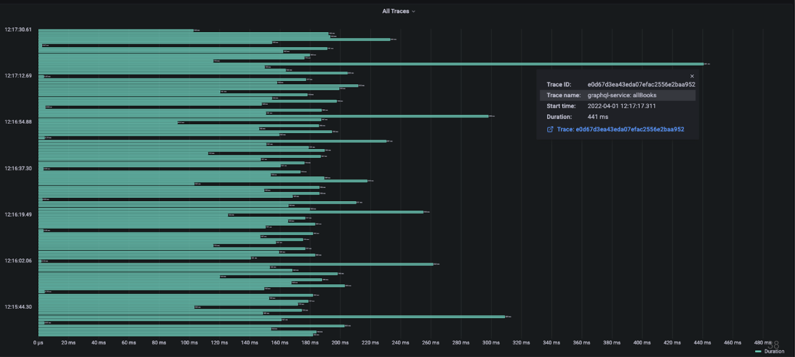
In the above image, there are some outlying traces. Sometimes, an
outlying trace is related to an operation that usually runs in line
with the rest of the GraphQL operations. If this is the case, then
the issue is usually related to something outside of the GraphQL
API, such as a temporarily overloaded database. In this case,
however, each of the outliers is related to the same GraphQL query
named allBooks (the operation name, as well as other relevant
information, can be seen when hovering over a trace), so it is time
to investigate that resolver.
5.2.4 Visualizing Resolver Runtime
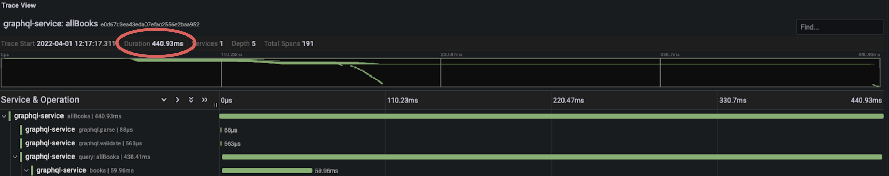
By clicking on a trace, it is possible to get more detailed
information about that trace and its spans. Above is an individual
view of one of the outlying traces that was shown in the previous
image. Here, spans are executed synchronously, and information for
only 20 books is fetched in nearly half a second. What happens when
making much larger requests that fetch information for 100, or 1,000
books? This inefficient query defeats the purpose of switching to
GraphQL in order to improve response times and may increase response
time when compared to a REST API.
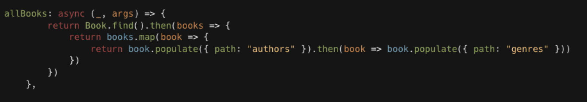
By examining the allBooks resolver function above, it is obvious
that the function can be optimized. This particular resolver returns
a promise, which in turn, returns a map of the original result,
which in turn, returns a promise that populates the genres field
once the authors field is populated for each book. There is a lot of
waiting, and it makes the response to this query unnecessarily slow.
Now, compare the above inefficient resolver to the resolver below,
which is much more efficient:
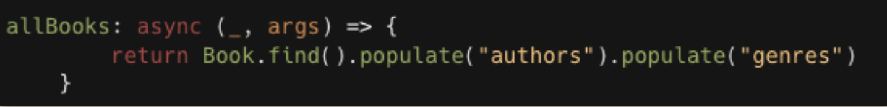
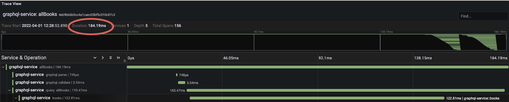
The above image shows trace information for the operation made using
the efficient resolver. In the above trace, spans execute
asynchronously. There are no significant gaps between span
executions - and latency time is now under 200 ms. In an expanded
view of this trace that shows all of its 156 spans, the first group
of asynchronous spans retrieves books, while the second group
retrieves authors and genres related to those books. Since it is
impossible to find the author or the genre of a book before knowing
what the book is, this is as efficient as this query can get. In
addition, this trace gives us confidence that this resolver could
return a much larger dataset without greatly increasing the response
time of the server due to its asynchronous nature.
This example may seem contrived and a little unrealistic, and it
probably is for such a simple query, but for people new to GraphQL,
or when dealing with more complicated resolvers, this is a big
issue. If a company like Novels and Barns did not have a GraphQL
observability tool set up, an inefficient resolver could easily be
pushed into a production environment and go unnoticed for weeks,
months, or even years.
QMantis provides insight into many areas of a GraphQL API, not just
resolver performance, but highlighting an inefficient resolver is
important for two reasons. First, inefficient resolvers can be very
hard to spot in a working API without proper observability, and
second, this demonstrates how QMantis can be used to track down an
issue all the way from the dashboard to a resolver execution.
Now that we have a better understanding of the features of QMantis,
let us discuss its architecture.
5.3 Architecture
This diagram gives an overview of the QMantis architecture. There
are two main overarching and interconnected components:
qmantis-express and qmantis-compose. On
the left, qmantis-express is a npm package with a
configured express-graphql server that is responsible
for generating the metrics and traces. On the right,
qmantis-compose lets the user deploy the QMantis
architecture on their own server using Docker in order to process,
export, store, and visualize incoming metrics and traces.
Now, to provide a better understanding, let us break up this
architecture into key phases.
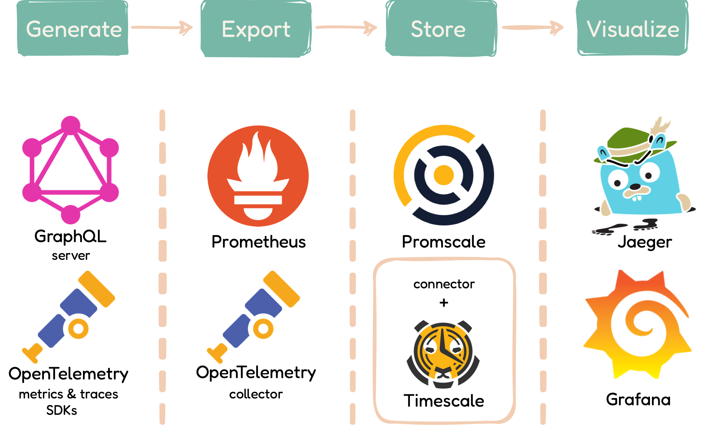
The QMantis architecture is split up into four major conceptual
phases: Phase 1: Generate Traces and Metrics
with a GraphQL server and OpenTelemetry SDKs Phase 2:
Export Data for Processing and Storage Phase 3:
Store Data with Promscale / TimescaleDB Phase 4:
Visualize / Analyze Data with Grafana
5.3.1 Phase 1: Generate Data with the qmantis-express GraphQL server
and OpenTelemetry SDKs
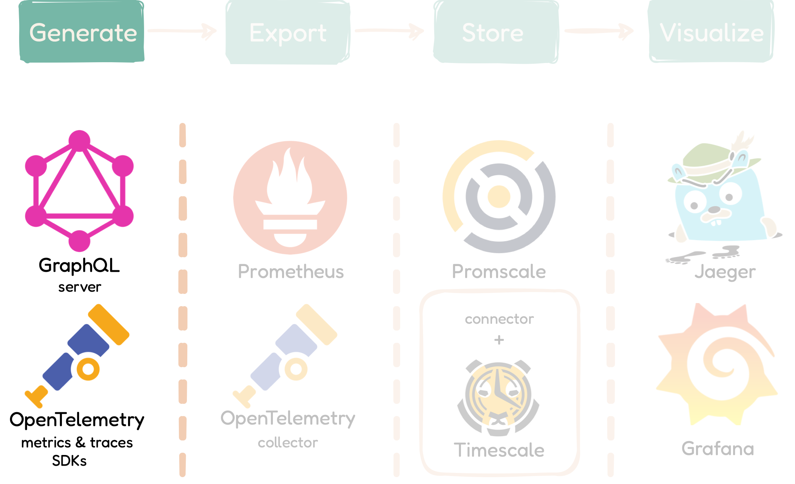
The first phase of the QMantis architecture, which is part of the
qmantis-express component, is to generate the metrics
and traces. In order to eventually visualize the data on the
dashboard, the data has to be created first. QMantis uses
OpenTelemetry to generate and collect telemetry data such as metrics
and traces.
OpenTelemetry is an open-source project that is composed of a
collection of tools, including APIs and SDKs. It is the current
leading developer tool kit for generating, collecting, and exporting
telemetry data [5]. In QMantis' use case, we use OpenTelementry to instrument a
GraphQL API.
To create the telemetry data, we configured an existing GraphQL
server with observability extensions, added custom express
middleware functions, and added two pre-configured OpenTelemetry
Node SDKs (one for Tracing, the other for Metrics).
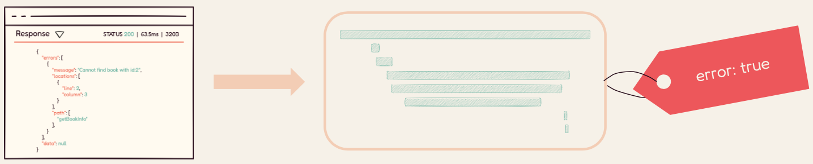
This is a crucial phase of the QMantis architecture because it is
when we ensure the data we generate is specific to GraphQL. For
example, the qmantis-express component checks the
response object to see if there is an errors property. If there is
one, it updates the error rate counter. Also, one of the panels in
the QMantis dashboard has all traces that contain an error. As
mentioned earlier, developers cannot rely on a response status code
to filter traces for errors, as most GraphQL responses, regardless
of their success, return a status code of 200. To address this, we
added custom error tags as needed, making it easy to filter and
visualize all traces with errors.
Additionally, the majority of GraphQL requests are POST requests.
The default name of a trace is the corresponding request HTTP
method, however, this is not meaningful to the user, since the
majority of traces would be named “HTTP POST”. Therefore, our team
altered each trace so that the user could distinguish between traces
more easily. Our custom middleware fetches the operation name from
the request body. If the user does not provide a name, then the
operation name becomes the operation type.
5.3.2 Phase 2: Export to the OpenTelemetry Collector and Prometheus
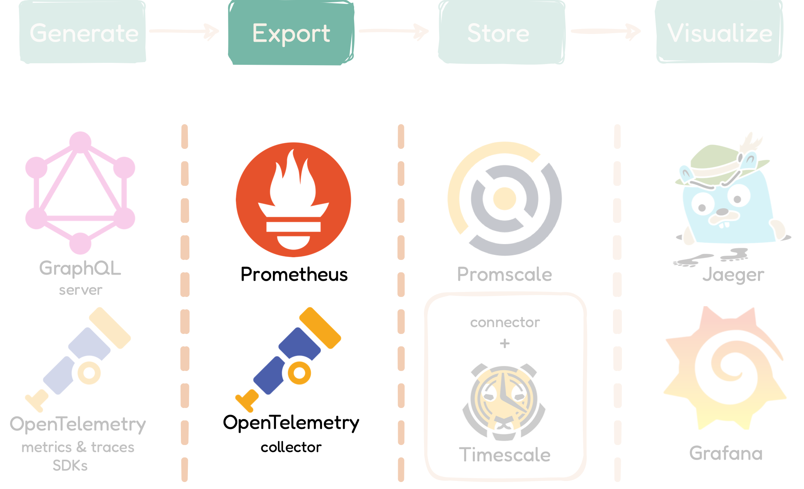
The Export phase, the 2nd phase of the QMantis architecture, is part
of the qmantis-compose component. Once telemetry data
is created, it needs to be exported before anything useful can be
done to it.
In the case of traces, the data is exported to the OpenTelemetry
Collector. The OpenTelemetry Collector is a central component that
handles additional steps such as batching and processing of traces
[6]. It consists of three main elements: receivers, processors, and
exporters, as seen below:
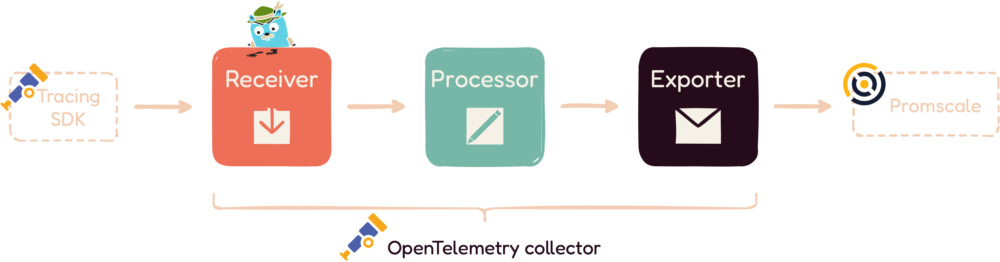
A receiver is how data gets into the collector and an exporter is
how data is sent to a specified destination. Processors are run on
data between being received and being exported, transforming it into
a common format, or adding metadata.
For the purposes of the QMantis Architecture, the Collector offloads
the responsibility of the application to manage the collected data,
which reduces overhead. Using the collector, our custom processors
add useful GraphQL information to each trace. Some of the spans in a
trace are given customized names, so, for example, users can
distinguish one request's field resolver from another without having
to click into each span for more information.
In the case of metrics, they are exported to Prometheus, which is an
open-source systems monitoring service that collects and stores
metrics as time-series data, meaning metrics information is stored
with the timestamp at which it was recorded. The purpose of
exporting metrics to Prometheus is to transform the data into a
format compatible with the next phase.
Now that the data has been generated and processed into a readable
and more meaningful format, making it easier to work with for
observability purposes, this data can be exported to long-term
storage, which is the following phase.
5.3.3 Phase 3: Storage with Promscale / TimescaleDB
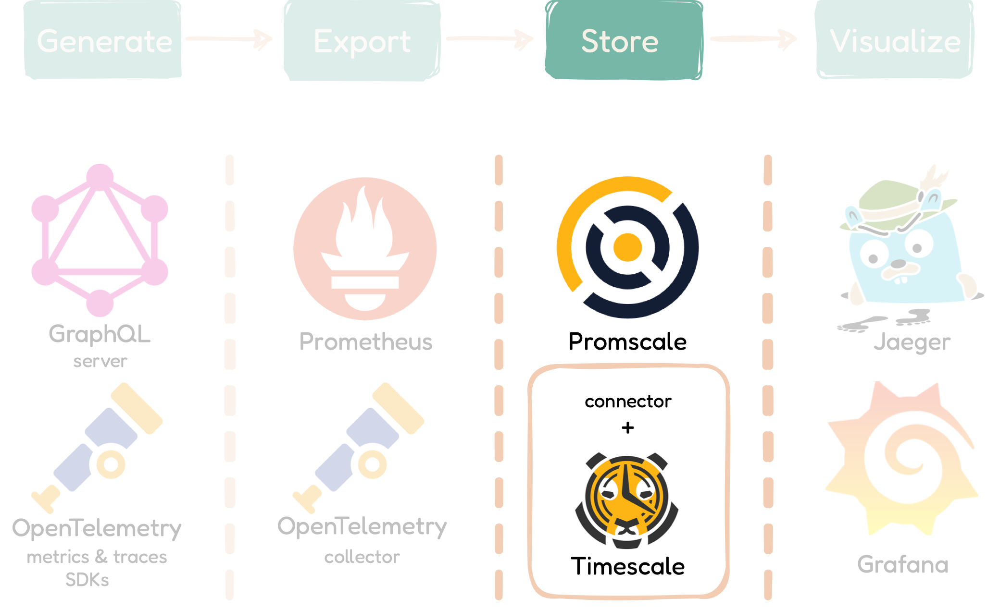
The third phase of the QMantis architecture, which is part of the
qmantis-compose component, is storage. Before we can
visualize and analyze telemetry data on Grafana, data needs to be
stored somewhere. Long-term storage is useful for users because they
can access not only current data, but also older data, which will be
very helpful if they want to analyze trends in their GraphQL API.
As time is a key component of how QMantis generates and reads data,
we chose to use a time-series database, as it is optimized for
time-stamped data. Time matters. If there is a potential problem, it
is important to know if it happened at 1 pm or 8 pm. If a user wants
to do maintenance during downtime, they need to know when there are
the downtimes. Also, time-series databases support a high-rate of
inserts and a low-rate of modifications and deletions. This is a
great fit for QMantis' use case because when a metric or trace is
created, there is no need to ever change it, the user only needs to
insert it and read it.
Specifically, QMantis uses TimescaleDB, an open-source time-series
database powered by SQL, with Promscale, a backend extension that
connects telemetry data to TimescaleDB. This database has no time
limit or cost involved in storing telemetry data for users.
Moreover, it allows us to keep everything in one place, therefore
simplifying our architecture, since we can store both metrics and
traces data on the same database.
Another main benefit of using TimescaleDB is that it leverages
PostgreSQL to store data, an established data store that is used
widely among developers. The choice to use TimescaleDB means that it
is easier for users to understand how their data is stored. Also,
using Promscale and Timescale for data storage allows users to
easily connect that data to Grafana, giving them the ability to
fully leverage Grafana's built-in queries.
5.3.4 Phase 4: Visualize / Analyze with Grafana
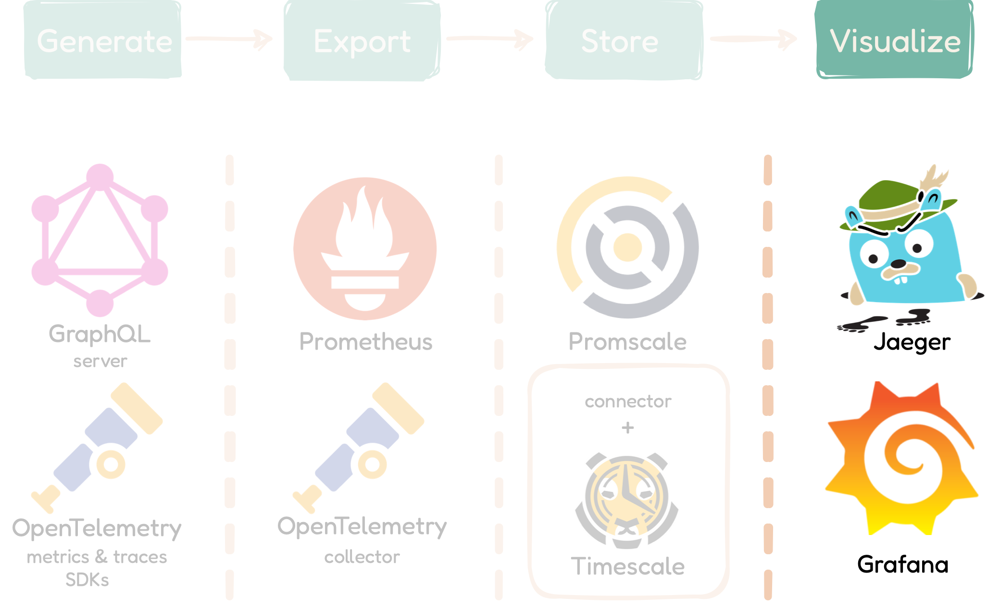
Finally, the last phase of the
qmantis-compose component involves visualizing and
analyzing data. To visualize the data, our team chose to use
Grafana, a popular open-source tool for observability dashboards
that comes with many options and functionalities. Our team
pre-configured an observability dashboard so that users can view and
analyze their application's request rate, request latency, error
rate, all their traces, and error traces. Grafana connects directly
to the Promscale connector and TimescaleDB in order to obtain
metrics data, as well as Jaeger, an open-source tool for end-to-end
distributed tracing, to query the traces data. In the design
decisions section, we will discuss in detail why we chose Grafana as
our visualization tool.
5.3.5 Overall View of QMantis Architecture's Components
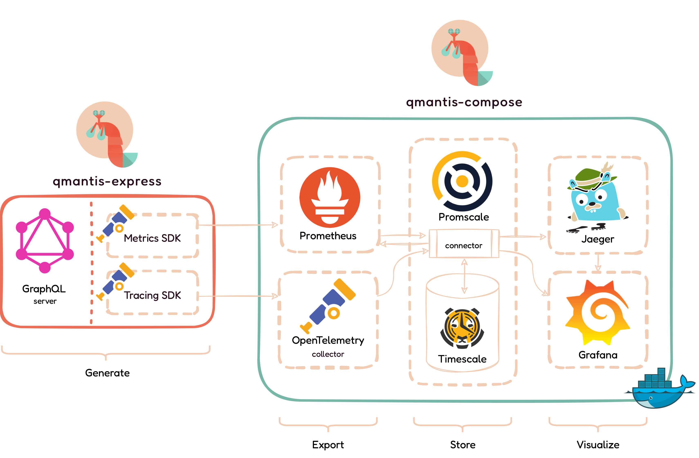
To recap, the above illustrates the QMantis architecture and its two
main components: qmantis-express (which consists of the
Generate phase) and qmantis-compose (which consists of
the Export, Store, and Visualize phases).
In summary, qmantis-express is a npm package, composed
of OpenTelemetry SDKs and a GraphQL server observability
configuration. It is responsible for generating the metrics and
traces data.qmantis-compose lets the user quickly and
seamlessly deploy the QMantis architecture on their own server using
Docker. It contains all the tools necessary to export, store, and
visualize GraphQL-specific observability data.
6. Design Decisions
Let us now go over some of the important design decisions we made
while developing QMantis.
6.1 Grafana vs Custom UI
When it came to visualizing data, our team considered two options -
building a custom user interface or using Grafana. A custom UI would
have provided two main benefits: we could have branded the UI to add
a QMantis-specific design, and we could have displayed data more
intuitively - especially for a first-time user. On another hand, we
would have to maintain a whole extra code base and any updates to
the UI would demand a lot of time.
Grafana, an industry-standard observability tool that many
developers are already familiar with, is extremely customizable.
Once a user has QMantis running, they can change the dashboard and
query settings to best fit their needs. To give an example, projects
at different points in the development cycle may want to query data
by different lengths of time, and Grafana makes that very easy.
Moreover, if our team decides to update the dashboard or panels in
the future, reconfiguration would be relatively simple.
Ultimately, the pros of building a custom UI did not outweigh the
pros of using Grafana, so we chose to go with Grafana.
6.2 GraphQL Server Choice
Early on in the process of building QMantis, our team considered
building our own GraphQL server. This would have given us control
over the implementation of the server and made it simple to generate
and collect data exactly how we wanted. However, if a developer had
an already existing GraphQL API, they would have had to change their
code to work with our less popular server in order to gain
observability. Taking this into consideration, we decided it would
be more useful to build a tool that could work with an already
widely used GraphQL server.
Another option was to use apollo-server, a popular
GraphQL server package. Note that this is different than the fully
managed Apollo Studio observability service. Our team considered
using apollo-server to give users the option to use a
GraphQL server that was framework-agnostic for Node.js. However,
this option had a major downside - the way
apollo-server is implemented makes it very difficult to
extract meaningful trace data, even when creating custom plugins to
extract this information.
In the end, we landed on express-graphql, a popular
JavaScript server for GraphQL - used by millions of developers
around the world. express-graphql does not currently
have any out-of-the-box observability options - paid or unpaid, and
it is highly customizable, allowing for developers to create
extensions with observability features. With this in mind, we built
the first iteration of QMantis using an extended
express-graphql server, providing an observability
service packaged with an already popular GraphQL server.
7. Implementation Challenges
7.1 Generating Metrics Data from express-graphql
Using express-graphql as our GraphQL server came with
significant challenges. As we did not have control over the
implementation of the server, our team had to be creative in order
to collect the needed data from request and response objects -
information that is essential to generating accurate and
GraphQL-specific telemetry data, a key feature of QMantis.
The two most difficult pieces of observability metrics data to
obtain were: the error count and the latency data for requests
that had 4xx or 5xx status codes. To get accurate information,
the server needed to access the response object before it was sent
back to the client. To do that, we relied on a function from the
express-graphql server to access the response object.
However, when the status code was 4xx or 5xx, the
express-graphql server did not execute that function,
so it no longer checked for errors or latency information.
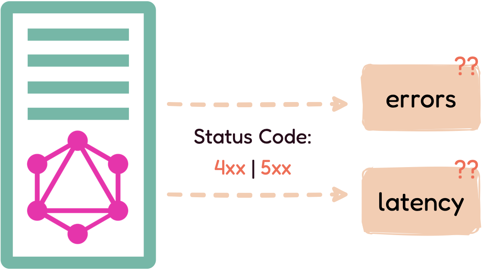
At this point, we considered modifying the QMantis architecture and
even prototyped a custom GraphQL server to get this data. This
approach worked, and we were able to obtain the needed data, but it
came with the limitations mentioned above. Ultimately, we found
better solutions to these challenges: using an existing npm package
called response-time to obtain latency data, and passing trace data
to a custom function to accurately count errors.
7.2 Connecting Metrics with Traces
Another significant challenge was connecting metrics with traces.
Initially, we wanted to connect metrics with traces to make it easy
for the developer to go from spotting a potential problem to getting
detailed trace information. How would that work? When the developer
spots something worth investigating, such as an outlier metric data
point, or an increase in the error rate, they would be able to click
on the datapoint, taking them to a list of traces that occurred
within that time frame.
After a lot of research, we found that the only way to have this
feature in Grafana was to use Grafana Tempo, Grafana's solution for
a traces backend. Currently, Grafana Tempo is only compatible with
an object storage database, such as Google Cloud Storage, Amazon S3,
or Azure Blob Storage. That meant we would need a different database
to store traces data, adding extra complexity to the QMantis
architecture. Another option was to build a custom UI, which was not
ideal, as discussed previously.
This left us with the challenge of making it easy to go from metrics
to traces in our dashboard. To overcome this obstacle, we created
two trace panels, one that shows traces by latency, making it easy
to spot the outliers, while the other only shows error traces. As
both metrics and traces have a time-stamp, it is easy for the user
to filter the traces panels to look for the information they need.
It is also worth noting that, as of early 2022, the leading paid
observability solutions for GraphQL do not currently support linking
metrics and traces together.
8. Installing and Using QMantis
Starting up QMantis is simple and can be done in a few steps:
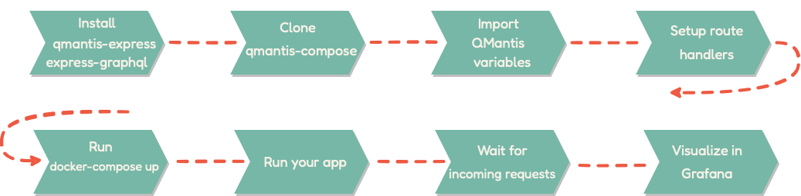
1. Install the
qmantis-express npm package. If
qmantis-express is not already installed, that needs to
be installed as well.
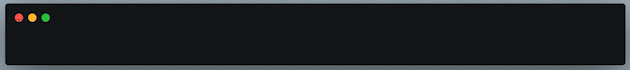
2. Clone the
qmantis-compose
repository. This repository can be cloned anywhere on your machine.
3. Import the QMantis variables
into your “main” file. This is the file that imports the schema and
starts up the express-graphql server for your API. It
is crucial to note that all of the QMantis variables need to be
imported before the express-graphql server, or there
may be some issues with collecting traces.
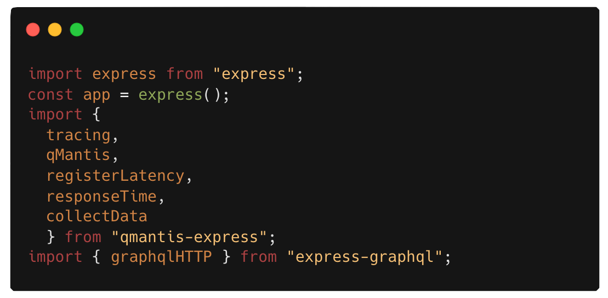
4. Set up the route handlers for
your /graphql endpoint. Note that the QMantis
registerLatency function needs to be passed to the
responseTime function as an argument and the main
qMantis function needs to take the GraphQL schema as an
argument and be passed to the express-graphql server.
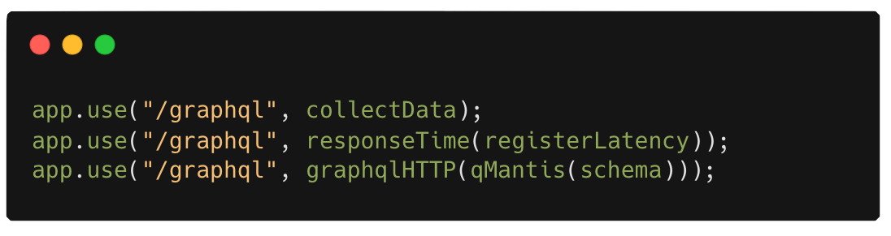
5. Initialize the QMantis docker
container. cd into the
qmantis-compose repository and run
docker compose up. The docker images will start to show
in the terminal and the qmantis-compose container with
all the running images can be visualized on Docker Desktop.
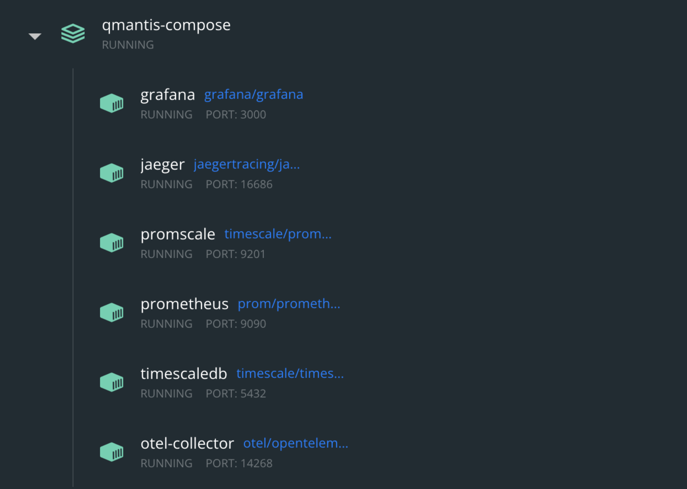
6. That is it for setup! Now, you
will need some data before you can visualize it. If you have a
production server and are using QMantis with it, you can simply
deploy it and wait for requests to come in. If you are still in a
development environment, you can use GraphiQL or another tool of
your choice to make requests.
7. Once requests start to come in,
navigate to localhost:3000 and view the prebuilt
QMantis dashboard in Grafana.
9. Future Work
9.1 Expanding Metrics
Our team believes adding certain datasets to the dashboard could
improve the usefulness of QMantis. Namely, we would like to be able
to see how often certain operations are requested, and the average
latency of specific operations. These features would allow
developers to get a quick read on the efficiency of individual
operations, and prioritize potential problems based on how often an
operation is requested.
9.2 Connecting Metrics and Traces
As discussed earlier, metrics and traces are not directly linked in
the current iteration of the QMantis dashboard. This will not be a
simple issue to solve, but our team is interested in continuing to
explore ways to offer this feature. In the long run, linking metrics
and traces together would be incredibly useful for quickly and
correctly diagnosing application issues.
9.3 Adding More GraphQL Server Types
Our team built the first iteration of QMantis using a customized
express-graphql server but would like to continue
working on the aforementioned customized
apollo-server prototype to give it fully functional
observability features, as this would give developers the
flexibility to work with various Node.js frameworks, aside from just
Express. Another option would be to add servers that work for other
languages, such as Ruby and Go.
9.4 Incorporating Alerts
Many observability platforms offer alerts via text, Slack, or email
when an issue arises. This is an interesting feature that could be
added to QMantis in the future, so users can add automated alerts
that are triggered by specific problems. Alerts would offer a nice
alternative to constantly having to check the Grafana dashboard for
issues.

 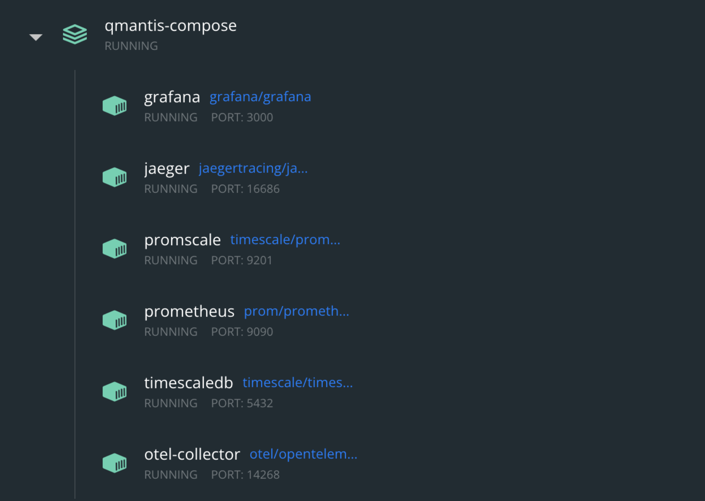
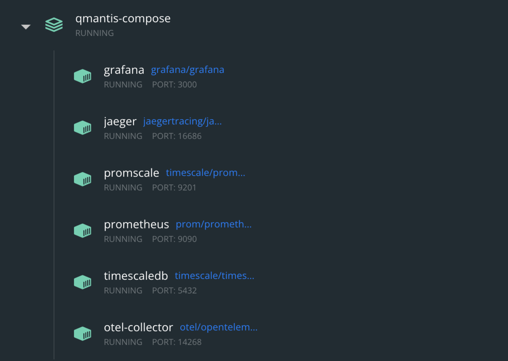